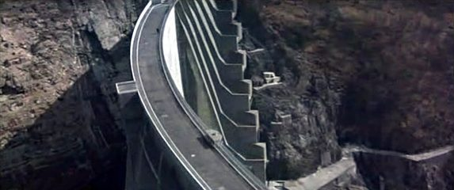


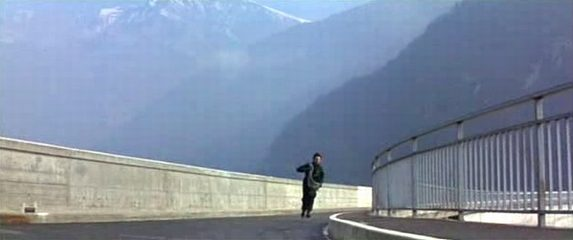


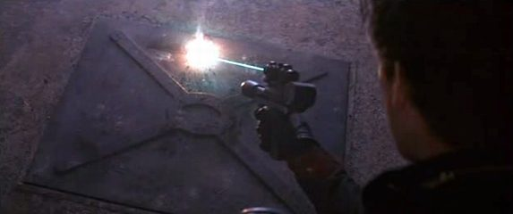


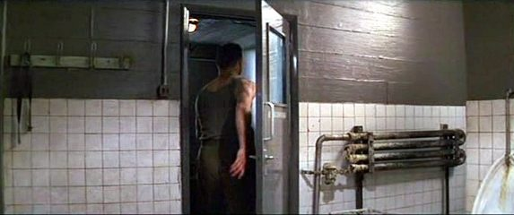


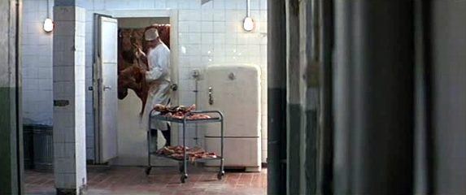


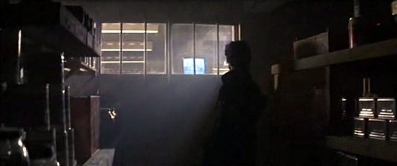


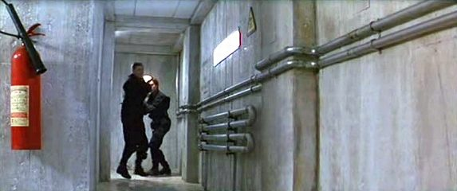

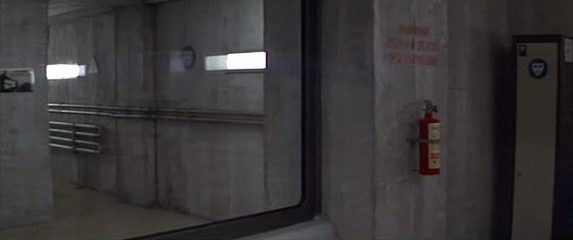


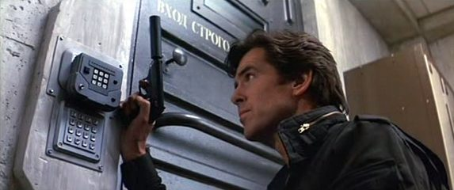


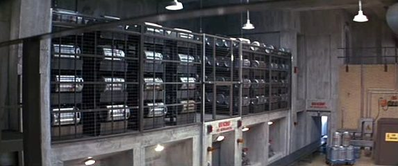


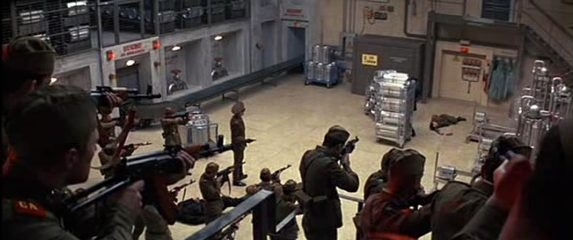


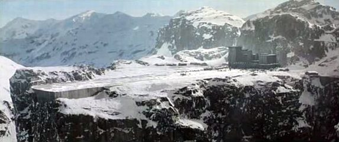
Une immense galerie d'images tirées des Films Goldeneye, Moonraker (pour Aztec) et L'Espion qui m'aimait (pour Egyptian), niveau par niveau : Dam / Barrage, Facility, Runway, Surface, Bunker, Frigate, Statue, Archives, Streets, Depot, Train, Control, Cradle, Aztec, Egyptian, et enfin Baron Samedi, Mayday et Oddjob.


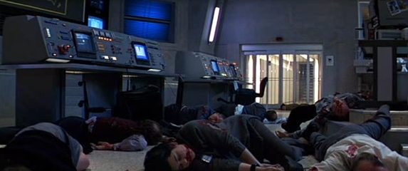


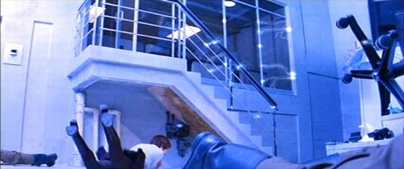


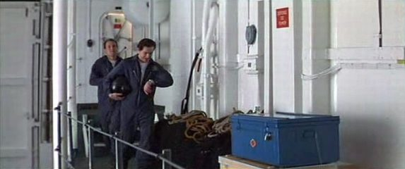


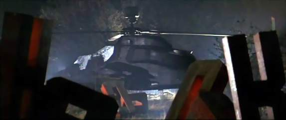


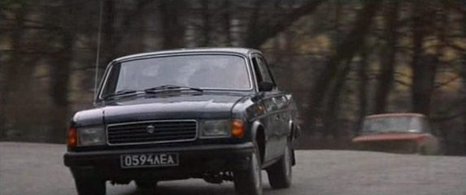


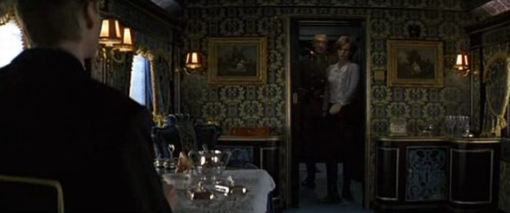


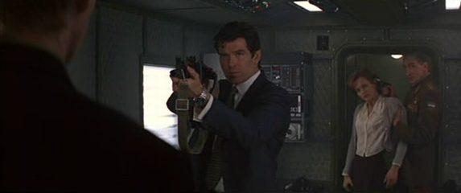

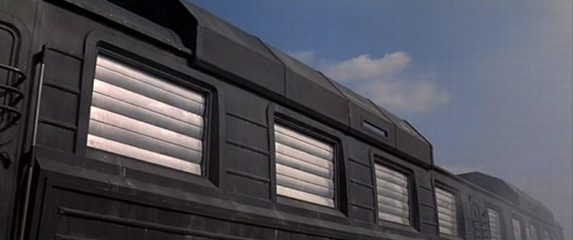


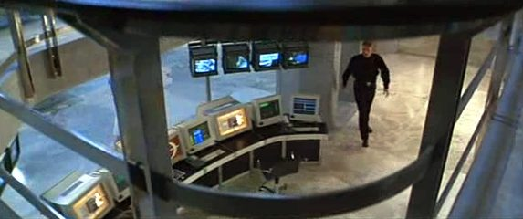

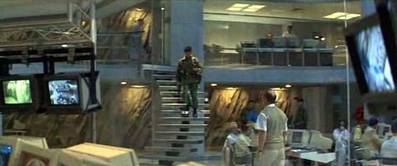


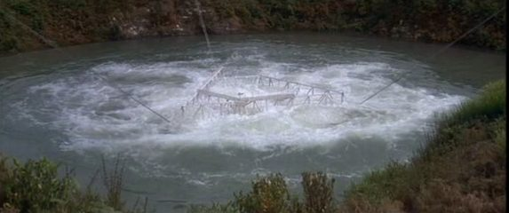


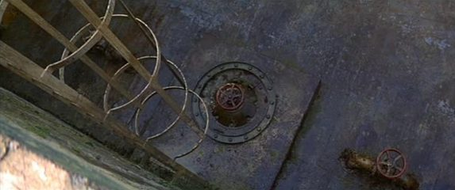


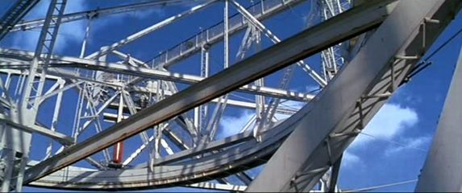


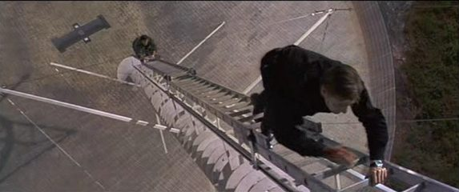


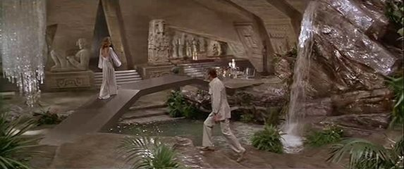


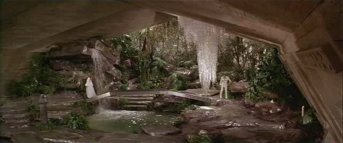


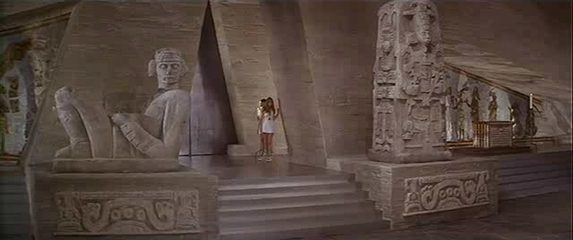


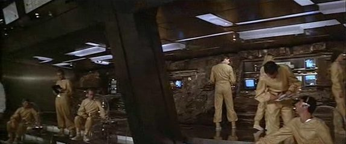

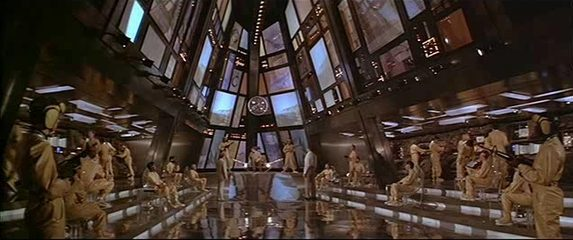

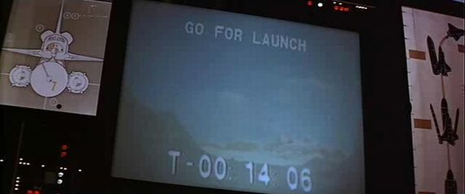

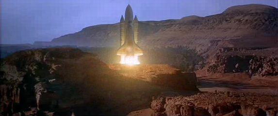


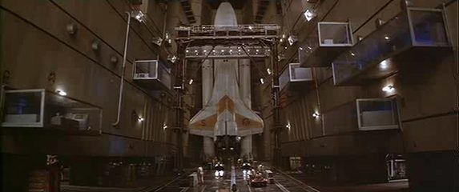

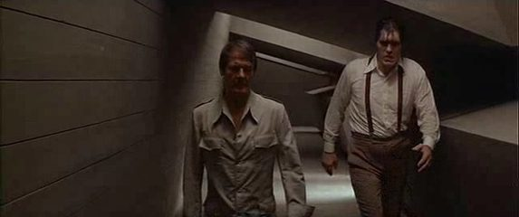

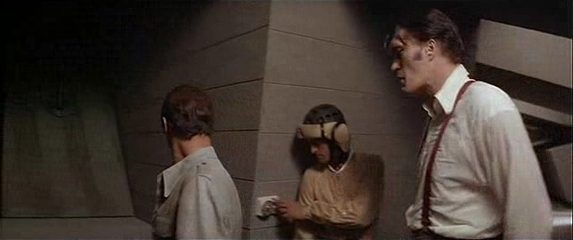

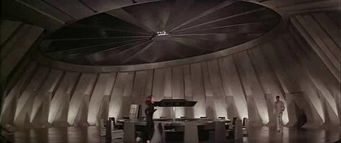


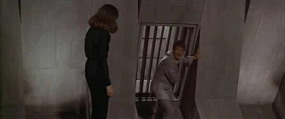


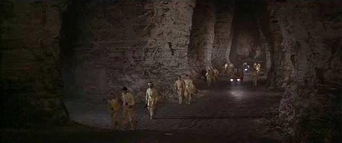


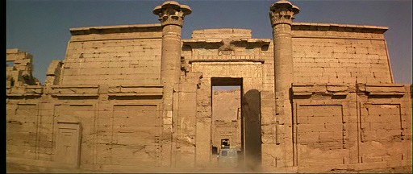


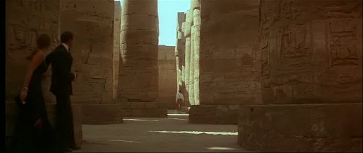

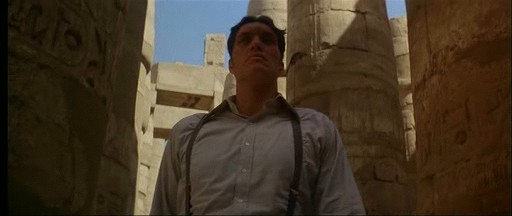